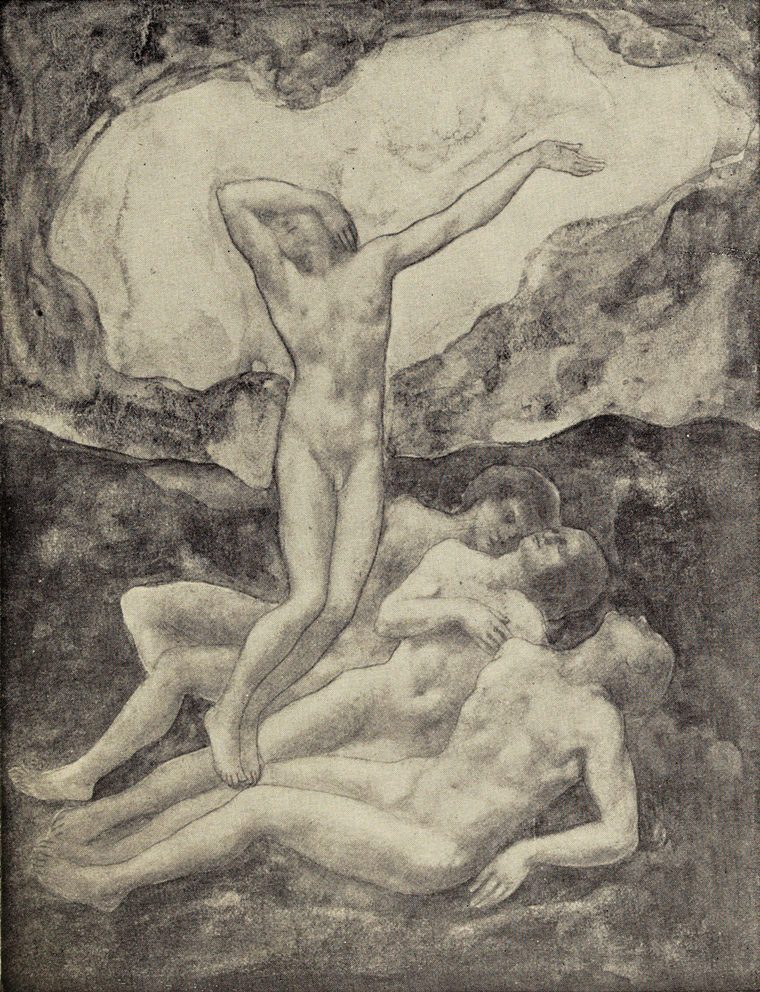

28L'adieu
Et voici que le soir était venu.
Et Almitra la voyante dit : Bénis soient ce jour, et ce lieu, et ton esprit qui a parlé.
Et il répondit : Était-ce moi qui parlais ? N'étais-je pas aussi celui qui écoutait ?
Alors il descendit les marches du Temple, et tout le peuple le suivit. Et il atteignit son navire et se tint debout sur le pont.
Et, se tournant de nouveau vers le peuple, il éleva la voix et dit :
Peuple d'Orphalèse, le vent m'ordonne de vous quitter.
Moins pressé suis-je que le vent, et pourtant il me faut partir.
Nous autres, les errants, qui cherchons toujours la voie la plus solitaire, nous ne commençons aucun jour là où nous en avons achevé un autre ; et nulle aurore ne nous trouve là où le couchant nous a laissés. Même quand la terre dort, nous voyageons.
Nous sommes les graines de la plante tenace, et c'est dans notre maturité et dans la plénitude de notre cœur que nous sommes livrés au vent et dispersés.
Brefs furent mes jours parmi vous, et plus brèves encore les paroles que j'ai dites.
Mais si ma voix venait à s'éteindre dans vos oreilles, et mon amour à s'effacer de votre mémoire, alors je reviendrai,
Et c'est d'un cœur plus riche et de lèvres plus dociles à l'esprit que je parlerai.
Oui, je reviendrai avec la marée,
Et bien que la mort puisse me cacher, et que le plus grand silence m'enveloppe, de nouveau je chercherai votre compréhension.
Et ce n'est pas en vain que je chercherai.
Si quelque chose de ce que j'ai dit est vérité, cette vérité se révélera d'une voix plus claire, et en des mots plus proches de vos pensées.
Je m'en vais avec le vent, peuple d'Orphalèse, mais non pour descendre dans le vide ; Et si ce jour n'est pas l'accomplissement de vos besoins et de mon amour, qu'il soit alors une promesse jusqu'à un autre jour.
Les besoins de l'homme changent, mais non son amour, ni son désir que son amour comble ses besoins.
Sachez donc que du plus grand silence je reviendrai.
La brume qui s'en va à l'aube, ne laissant que la rosée dans les champs, s'élèvera et s'amassera en nuage, puis retombera en pluie.
Et je n'ai pas été autre que la brume.
Dans le calme de la nuit j'ai marché dans vos rues, et mon esprit est entré dans vos maisons,
Et les battements de vos cœurs étaient dans mon cœur, et votre souffle était sur mon visage, et je vous ai tous connus.
Oui, j'ai connu votre joie et votre douleur, et dans votre sommeil vos rêves étaient mes rêves.
Et souvent j'étais parmi vous un lac parmi les montagnes.
Je reflétais en vous les cimes et les pentes inclinées, et jusqu'aux troupeaux passants de vos pensées et de vos désirs.
Et dans mon silence venait le rire de vos enfants en ruisseaux, et l'ardeur de vos jeunes gens en fleuves.
Et quand ils atteignaient ma profondeur, les ruisseaux et les fleuves ne cessaient pas encore de chanter.

Mais quelque chose de plus doux encore que le rire et de plus grand que l'ardeur vint jusqu'à moi.
C'était ce qui en vous est sans limites ;
L'homme immense dont vous n'êtes tous que les cellules et les tendons ;
Celui dans le chant duquel tout votre chant n'est qu'une pulsation sans voix.
C'est dans l'homme immense que vous êtes immenses,
Et c'est en le contemplant que je vous ai contemplés et que je vous ai aimés.
Car quelles distances l'amour peut-il atteindre qui ne soient dans cette vaste sphère ?
Quelles visions, quelles attentes et quelles présomptions peuvent s'élever plus haut que ce vol ?
Pareil à un chêne géant couvert de fleurs de pommier est l'homme immense en vous. Sa puissance vous lie à la terre, son parfum vous élève dans l'espace, et dans sa durée vous êtes immortels.
On vous a dit que, telle une chaîne, vous n'êtes pas plus forts que votre maillon le plus faible.
Ce n'est là que la moitié de la vérité. Vous êtes aussi forts que votre maillon le plus fort.
Vous mesurer à votre plus petite action, c'est évaluer la puissance de l'océan à la fragilité de son écume.
Vous juger sur vos échecs, c'est reprocher aux saisons leur inconstance.
Oui, vous êtes pareils à un océan,
Et bien que des navires lourdement échoués attendent la marée sur vos rivages, pourtant, tout comme un océan, vous ne pouvez hâter vos marées.
Et vous êtes aussi pareils aux saisons,
Et bien que dans votre hiver vous reniiez votre printemps,
Pourtant le printemps, reposant en vous, sourit dans sa somnolence et ne s'offense pas. Ne pensez pas que je dise ces choses pour que vous puissiez vous dire l'un à l'autre : « Il nous a bien loués. Il n'a vu en nous que le bien. »
Je ne fais que vous dire en paroles ce que vous-mêmes savez en pensée.
Et qu'est-ce que la connaissance des mots, sinon l'ombre de la connaissance sans mots ?
Vos pensées et mes paroles sont des vagues venues d'une mémoire scellée qui garde la trace de nos jours d'hier,
Et des jours anciens où la terre ne nous connaissait pas, ni ne se connaissait elle-même,
Et des nuits où la terre était soulevée par le chaos.
Des sages sont venus à vous pour vous donner de leur sagesse. Moi, je suis venu prendre de votre sagesse :
Et voici que j'ai trouvé ce qui est plus grand que la sagesse.
C'est un esprit de flamme en vous, qui sans cesse rassemble davantage de lui-même,
Tandis que vous, sans prendre garde à son expansion, vous pleurez le flétrissement de vos jours. C'est la vie en quête de la vie, dans des corps qui craignent la tombe.
Il n'y a pas de tombes ici.
Ces montagnes et ces plaines sont un berceau et un marchepied.
Chaque fois que vous passez près du champ où vous avez couché vos ancêtres, regardez-le bien, et vous vous verrez vous-mêmes, avec vos enfants, danser main dans la main.
En vérité, souvent vous vous réjouissez sans le savoir.
D'autres sont venus à vous, à qui, pour des promesses dorées faites à votre foi, vous n'avez donné que richesses, pouvoir et gloire.
Moins qu'une promesse vous ai-je donné, et pourtant vous avez été plus généreux envers moi.
Vous m'avez donné ma soif plus profonde de la vie.
Assurément il n'est pas de plus grand don pour un homme que celui qui change tous ses buts en lèvres desséchées et toute la vie en fontaine.

Et en cela résident mon honneur et ma récompense, —
Que chaque fois que je viens à la fontaine pour boire, je trouve l'eau vive elle-même assoiffée ;
Et elle me boit tandis que je la bois.
Certains d'entre vous m'ont jugé fier et trop réservé pour recevoir des dons.
Trop fier, en effet, je le suis pour recevoir un salaire, mais non des dons.
Et bien que j'aie mangé des baies parmi les collines quand vous auriez voulu me voir assis à votre table,
Et dormi sous le portique du temple quand vous m'auriez volontiers abrité,
N'était-ce pas pourtant votre tendre attention à mes jours et à mes nuits qui rendait la nourriture douce à ma bouche et ceignait mon sommeil de visions ?
Pour cela, plus que pour tout, je vous bénis :
Vous donnez beaucoup et ne savez même pas que vous donnez. En vérité, la bonté qui se contemple dans un miroir se change en pierre,
Et la bonne action qui se nomme de noms tendres devient mère d'une malédiction.
Et certains d'entre vous m'ont dit distant, et ivre de ma propre solitude,
Et vous avez dit : « Il tient conseil avec les arbres de la forêt, mais non avec les hommes.
Il s'assied seul au sommet des collines et regarde de haut notre cité. »
Il est vrai que j'ai gravi les collines et marché en des lieux lointains.
Comment aurais-je pu vous voir, sinon d'une grande hauteur ou d'une grande distance ?
Comment peut-on être vraiment proche, à moins d'être loin ?
Et d'autres parmi vous m'ont appelé, non par des mots, et ils disaient :
« Étranger, étranger, amant des hauteurs inaccessibles, pourquoi demeures-tu parmi les cimes où les aigles bâtissent leurs nids ? Pourquoi cherches-tu l'inatteignable ?
Quelles tempêtes voudrais-tu prendre dans ton filet,
Et quels oiseaux de vapeur chasses-tu dans le ciel ?
Viens et sois l'un des nôtres.
Descends, apaise ta faim avec notre pain et étanche ta soif avec notre vin. »
Dans la solitude de leur âme ils disaient ces choses ;
Mais si leur solitude avait été plus profonde, ils auraient su que je ne cherchais que le secret de votre joie et de votre douleur,
Et que je ne chassais que vos moi plus vastes qui marchent dans le ciel.
Mais le chasseur était aussi le chassé ;
Car bien de mes flèches ne quittaient mon arc que pour chercher ma propre poitrine.
Et celui qui volait était aussi celui qui rampait ;
Car lorsque mes ailes étaient déployées au soleil, leur ombre sur la terre était une tortue.
Et moi, le croyant, j'étais aussi celui qui doute ; Car souvent j'ai mis le doigt dans ma propre blessure, afin d'avoir en vous une plus grande foi et de vous une plus grande connaissance.
Et c'est avec cette foi et cette connaissance que je dis :
Vous n'êtes pas enfermés dans vos corps, ni confinés aux maisons ou aux champs.
Ce qui est vous demeure au-dessus de la montagne et erre avec le vent.
Ce n'est pas une chose qui rampe au soleil pour se chauffer ou qui creuse des trous dans les ténèbres pour s'y mettre à l'abri,
Mais une chose libre, un esprit qui enveloppe la terre et se meut dans l'éther.
Si ces mots sont vagues, ne cherchez pas à les éclaircir.
Vague et nébuleux est le commencement de toutes choses, mais non leur fin,
Et je voudrais que vous vous souveniez de moi comme d'un commencement.
La vie, et tout ce qui vit, est conçue dans la brume et non dans le cristal. Et qui sait si le cristal n'est pas de la brume qui se défait ?
Voici ce que je voudrais que vous gardiez en vous souvenant de moi :
Ce qui semble en vous le plus faible et le plus égaré est le plus fort et le plus résolu.
N'est-ce pas votre souffle qui a dressé et durci la charpente de vos os ?
Et n'est-ce pas un rêve, que nul d'entre vous ne se souvient d'avoir rêvé, qui a bâti votre cité et façonné tout ce qui s'y trouve ?
Si seulement vous pouviez voir les marées de ce souffle, vous cesseriez de voir tout le reste,
Et si vous pouviez entendre le murmure du rêve, vous n'entendriez aucun autre son.
Mais vous ne voyez pas, et vous n'entendez pas, et cela est bien.
Le voile qui obscurcit vos yeux sera levé par les mains qui l'ont tissé,
Et l'argile qui emplit vos oreilles sera percée par les doigts qui l'ont pétrie. Et vous verrez.
Et vous entendrez.
Pourtant vous ne déplorerez pas d'avoir connu la cécité, ni ne regretterez d'avoir été sourds.
Car en ce jour-là vous connaîtrez les desseins cachés en toutes choses,
Et vous bénirez les ténèbres comme vous béniriez la lumière.
Ayant dit ces choses, il regarda autour de lui, et il vit le pilote de son navire debout près de la barre, qui contemplait tantôt les voiles gonflées, tantôt le lointain.
Et il dit :
Patient, trop patient, est le capitaine de mon navire.
Le vent souffle, et les voiles s'agitent ;
Le gouvernail lui-même implore une direction ;
Et pourtant mon capitaine attend en paix mon silence.
Et mes marins que voici, qui ont entendu le chœur de la mer plus grande, eux aussi m'ont écouté avec patience. À présent ils n'attendront plus.
Je suis prêt.
Le ruisseau a atteint la mer, et une fois encore la grande mère serre son fils contre son sein.
Adieu, peuple d'Orphalèse.
Ce jour s'est achevé.
Il se referme sur nous comme le nénuphar sur son propre lendemain.
Ce qui nous a été donné ici, nous le garderons,
Et si cela ne suffit pas, alors il nous faudra de nouveau nous réunir et ensemble tendre les mains vers celui qui donne.
N'oubliez pas que je reviendrai vers vous.
Encore un peu de temps, et mon désir rassemblera poussière et écume pour un autre corps.
Encore un peu de temps, un moment de repos sur le vent, et une autre femme me mettra au monde.
Adieu à vous, et à la jeunesse que j'ai passée avec vous.
C'était hier seulement que nous nous rencontrions dans un rêve. Vous avez chanté pour moi dans ma solitude, et de vos désirs j'ai bâti une tour dans le ciel.
Mais à présent notre sommeil s'est enfui, et notre rêve est fini, et ce n'est plus l'aube.
Midi est sur nous, et notre demi-éveil s'est changé en un jour plus plein, et il nous faut nous séparer.
Si dans le crépuscule de la mémoire nous devions nous rencontrer encore, nous parlerons de nouveau ensemble, et vous me chanterez un chant plus profond.
Et si nos mains devaient se rencontrer dans un autre rêve, nous bâtirons une autre tour dans le ciel.
Ce disant, il fit un signe aux marins, et aussitôt ils levèrent l'ancre et détachèrent le navire de ses amarres, et ils s'en allèrent vers l'orient.
Et un cri monta du peuple comme d'un seul cœur, et il s'éleva dans le crépuscule et fut porté au loin sur la mer comme une grande sonnerie de trompettes.
Seule Almitra se taisait, suivant des yeux le navire jusqu'à ce qu'il eût disparu dans la brume.
Et quand tout le peuple se fut dispersé, elle se tenait encore seule sur la digue, se souvenant en son cœur de sa parole :
« Encore un peu de temps, un moment de repos sur le vent, et une autre femme me mettra au monde. »